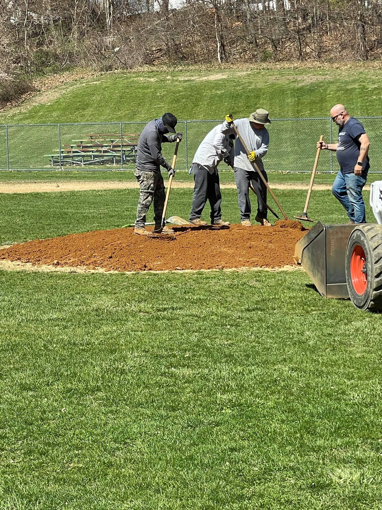
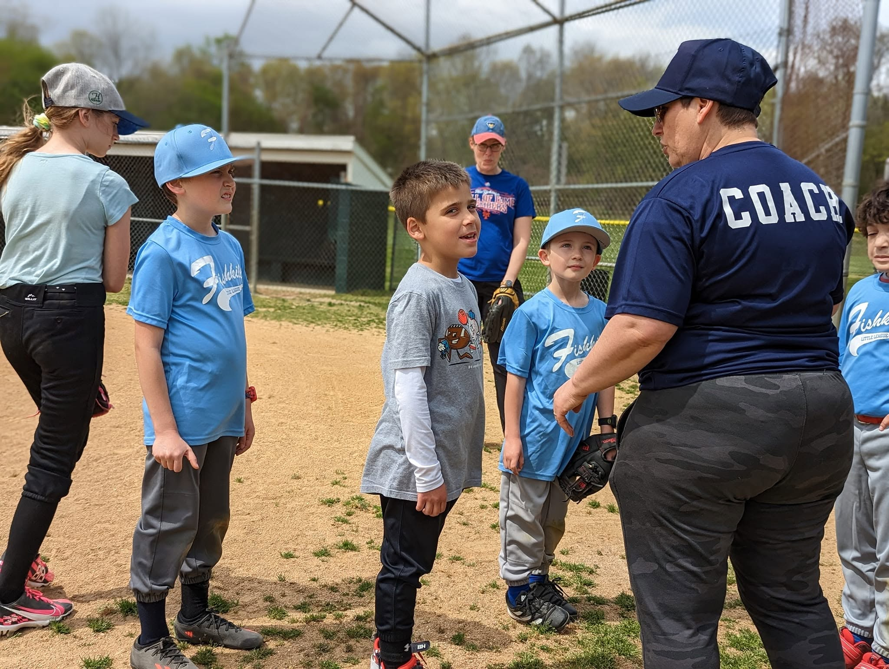

Head Coach / Team Manager
Lead practices and games, plan drills and lineups, and coordinate with families and assistant coaches throughout the season.


Fishkill Little League is operated entirely by volunteers. Coaches, team parents, concession workers, field maintenance crews and board members all contribute to the success of every season.
Volunteering is one of the best ways to support local youth baseball and softball.
Lead practices and games, plan drills and lineups, and coordinate with families and assistant coaches throughout the season.
Run practice stations, help players build skills and support the head coach during games.
Help families keep track of team reminders, organize sign-ups and coordinate team activities with the coaches.
Officiate games, make calls on the field and help keep play fair. Contact the league to ask about getting started and training.
Help prepare and serve snacks, restock supplies and clean up during a scheduled game-day shift.
Help get the diamonds ready for play by raking, lining fields or pitching in at a field workday.
Help with setup, check-in, activities or cleanup at events such as Opening Day and Community Day.
Help plan fundraisers, assemble materials or staff an event that supports league programs.
All volunteers must complete a background check, take a child safety course, and receive approval from the Fishkill Little League Board before volunteering.
Tell us which roles interest you and whether you’re available for a single event or throughout the season. We’ll help you find an opening and walk you through the approval steps.